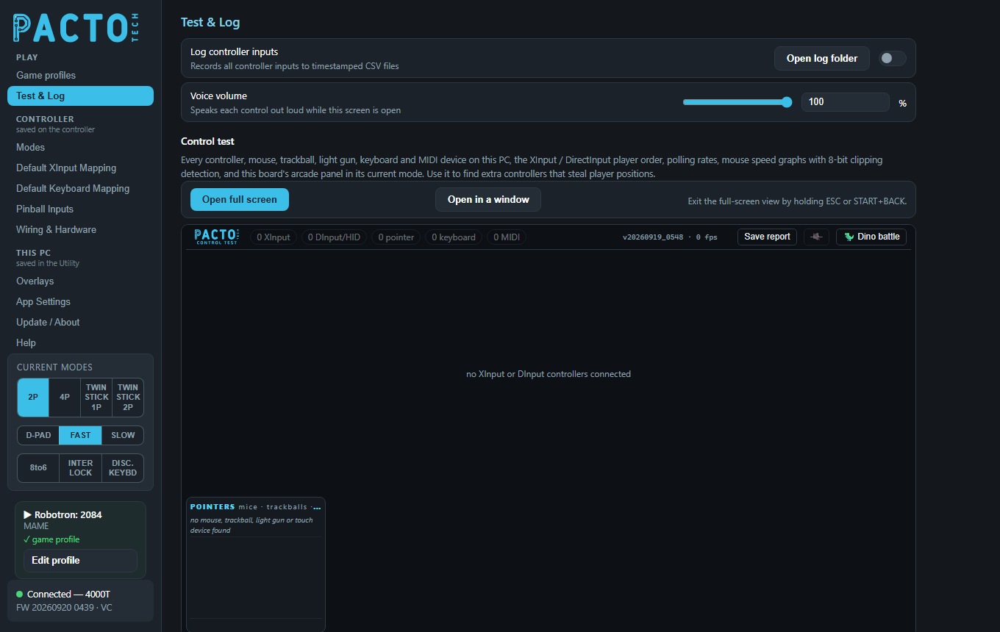
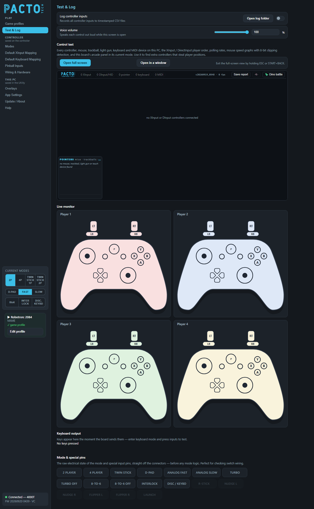

Check that every button, joystick and controller works and shows up where games expect it. You can also record your inputs to a file.

Test & Log is in the Play group of the sidebar, right under Game profiles.
Save report writes a text file listing every
device, ready to send.Turn on Log controller inputs to record every change on the four XInput player slots to a CSV file (one line per change, with the time, slot, buttons, triggers and stick positions). Logging only watches: games still see the controllers as normal.
A new file named pacto_inputs_<date>_<time>.csv starts each time logging is
switched on. Open log folder opens the folder
(%LOCALAPPDATA%\PactoConfigurator\logs). The files open in Excel or any text editor.
While this page is open, the Utility says each control out loud as you press it, for example "P 1 A" or "P 2 L T". You can test a whole panel without looking at the screen. Set the volume from 0 to 100% (0 turns the voice off). The voice only speaks while the Utility window is in front.
The Control test shows every controller, mouse, trackball, light gun, keyboard and MIDI device on the PC, all in one screen. It runs inside the page while Test & Log is open and stops when you leave the page.
| Part | What it shows |
|---|---|
| Top bar | How many XInput, DInput/HID, pointer, keyboard and MIDI devices are connected. |
| Controller cards | One card per controller: the XInput slots first, then other
(DirectInput/HID) pads and wheels. Each card shows the name, the USB ID, the player order
(for example XInput P2 · DInput #3 · SDL #2), which station on the Pacto panel it is,
the polling rate, live sticks and triggers, and the buttons held. XInput cards have a
rumble button. |
| Arcade panel | This board's control panel in its current mode, with each button lighting up as you press it. Shown when a Pacto board is connected and its firmware reports its modes. |
| Pointers | Mice, trackballs, light guns and touch screens, with speed graphs. A warning appears if a device is clipping at the limit of 8-bit movement reports. |
| Keyboards | Keys and media keys as they are pressed. |
| MIDI | MIDI devices and their messages. |
A bar at the top explains problems as they are found:
Open full screen opens the Control test on its own, filling the screen, which is ideal on
the cabinet monitor. Open in a window opens it as a normal window.
To leave the full-screen view, hold ESC (1.5 seconds) or START+BACK on any
controller (2 seconds). A ring fills while you hold; letting go cancels. The ✕ button also
closes it. F11 switches between full screen and a window.
Save report (or F12, or holding LB+RB for 2 seconds on any controller) writes a text file named PactoTech_ControlTest_<date>_<time>.txt. It lists
the device counts, which controller holds each XInput slot, the DirectInput order, the board's details
and every device with its IDs. The file goes in the Utility's program folder, or on your Desktop if
that folder can't be written to. A message shows exactly where it was saved.
Dino battle starts a small game: each controller gets a dinosaur that appears above its
card at its first input, and fights the others with the buttons. Mice, trackballs and light guns shoot
with their crosshair. You can also start it by holding A+B for 3 seconds on any controller. It
is off until you start it. It is a fun way to check that every player's controls respond.

One gamepad drawing per player your board supports. Buttons light up, the stick dots move and the trigger bars fill as Windows receives each input. The cards follow the XInput player slots as Windows numbers them: if another controller has taken slot 1, the Player 1 card shows that controller. A card is dimmed when its slot is empty.
Shows the keys the board is typing right now, the moment it sends them, and says each new key out loud. Switch
the board into keyboard mode and press the controls to test; No keys pressed shows otherwise. The keys
come from Default Keyboard Mapping (and, for spare pins, the
Types key column on Wiring & Hardware).
The raw electrical state of the mode and special input pins (2 PLAYER, TURBO, 8-TO-6, DISC / KEYBD and so on), straight off the connectors and before any mode logic. Use it to check switch wiring: each tile lights while its pin is active, and the voice names each pin as it turns on. Pins your board doesn't have are greyed out. How each pin behaves is set on Wiring & Hardware.